Gower clustering¶
Exploring the gower distance metric¶
A distance metric used to find clusters in ordinal data
\(G S_{i j}=\frac{1}{m} \sum_{f=1}^{m} p s_{i j}^{(f)}\)
Similarity between observations i and j. Having each observation m different features, either numerical, categorical or mixed.
\(p s_{i j}^{(f)}=1-\frac{\left|x_{i f}-x_{j f}\right|}{R_{f}}\)
Similarity between observation i and j in feature f when f is numerical. For a categorical feature, the partial similarity between two individuals is one only when both observations have exactly the same value for this feature. Zero otherwise.
\(R_{f}=\max f-\min f\)
Range of a feature f.
[1]:
import pandas as pd
from pandas.api.types import CategoricalDtype
import numpy as np
import matplotlib.pyplot as plt
import seaborn as sns
from sklearn.cluster import DBSCAN
from sklearn.metrics import roc_auc_score, roc_curve, confusion_matrix
from sklearn.datasets import make_classification
import gower
from scipy.cluster.hierarchy import linkage, fcluster, dendrogram
[2]:
from extras import plot_confusion_matrix, tSNE
Multiclass example 1.¶
[3]:
# Creating a dictionary with the data
df = pd.DataFrame({"age": [22, 25, 30, 38, 42, 47, 55, 62, 61, 90],
"gender": ["M", "M", "F", "F", "F", "M", "M", "M", "M", "M"],
"civil_status": ["SINGLE", "SINGLE", "SINGLE", "MARRIED", "MARRIED", "SINGLE", "MARRIED", "DIVORCED", "MARRIED", "DIVORCED"],
"salary": [18000, 23000, 27000, 32000, 34000, 20000, 40000, 42000, 25000, 70000],
"has_children": [False, False, False, True, True, False, False, False, False, True],
"purchaser_type": ["LOW_PURCHASER", "LOW_PURCHASER", "LOW_PURCHASER", "HEAVY_PURCHASER", "HEAVY_PURCHASER", "LOW_PURCHASER", "MEDIUM_PURCHASER", "MEDIUM_PURCHASER", "MEDIUM_PURCHASER", "LOW_PURCHASER"]})
[4]:
df
[4]:
| age | gender | civil_status | salary | has_children | purchaser_type | |
|---|---|---|---|---|---|---|
| 0 | 22 | M | SINGLE | 18000 | False | LOW_PURCHASER |
| 1 | 25 | M | SINGLE | 23000 | False | LOW_PURCHASER |
| 2 | 30 | F | SINGLE | 27000 | False | LOW_PURCHASER |
| 3 | 38 | F | MARRIED | 32000 | True | HEAVY_PURCHASER |
| 4 | 42 | F | MARRIED | 34000 | True | HEAVY_PURCHASER |
| 5 | 47 | M | SINGLE | 20000 | False | LOW_PURCHASER |
| 6 | 55 | M | MARRIED | 40000 | False | MEDIUM_PURCHASER |
| 7 | 62 | M | DIVORCED | 42000 | False | MEDIUM_PURCHASER |
| 8 | 61 | M | MARRIED | 25000 | False | MEDIUM_PURCHASER |
| 9 | 90 | M | DIVORCED | 70000 | True | LOW_PURCHASER |
[5]:
d_matrix = gower.gower_matrix(df.drop("purchaser_type", axis=1))
[6]:
customer_names = [f"c_{x}" for x in range(d_matrix.shape[0])]
[7]:
_ = plt.figure(figsize=(7,4))
ax = sns.heatmap(data=pd.DataFrame(d_matrix, index=customer_names, columns=customer_names),
annot=True,
fmt='.2g')
ax.xaxis.tick_top()
ax.xaxis.set_label_position('top')
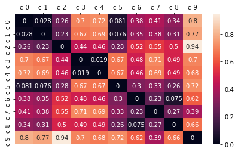
[8]:
# Configuring the parameters of the clustering algorithm
dbscan_cluster = DBSCAN(eps=0.3,
min_samples=2,
metric="precomputed")
[9]:
# Fitting the clustering algorithm
dbscan_cluster.fit(d_matrix)
[9]:
DBSCAN(eps=0.3, metric='precomputed', min_samples=2)
[10]:
# Adding the results to a new column in the dataframe
df["DBSCAN_cluster"] = dbscan_cluster.labels_
[11]:
l_matrix = linkage(d_matrix)
<ipython-input-11-df338ac2b59e>:1: ClusterWarning: scipy.cluster: The symmetric non-negative hollow observation matrix looks suspiciously like an uncondensed distance matrix
l_matrix = linkage(d_matrix)
[12]:
cld = fcluster(l_matrix, 3, criterion='maxclust')
df["linkage_cluster"] = cld
[13]:
_ = plt.figure(figsize=(20, 4))
dn = dendrogram(l_matrix)
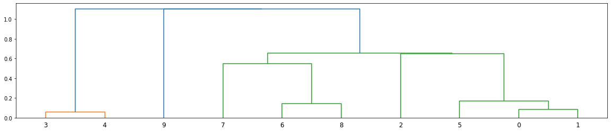
[14]:
df
[14]:
| age | gender | civil_status | salary | has_children | purchaser_type | DBSCAN_cluster | linkage_cluster | |
|---|---|---|---|---|---|---|---|---|
| 0 | 22 | M | SINGLE | 18000 | False | LOW_PURCHASER | 0 | 2 |
| 1 | 25 | M | SINGLE | 23000 | False | LOW_PURCHASER | 0 | 2 |
| 2 | 30 | F | SINGLE | 27000 | False | LOW_PURCHASER | 0 | 2 |
| 3 | 38 | F | MARRIED | 32000 | True | HEAVY_PURCHASER | 1 | 1 |
| 4 | 42 | F | MARRIED | 34000 | True | HEAVY_PURCHASER | 1 | 1 |
| 5 | 47 | M | SINGLE | 20000 | False | LOW_PURCHASER | 0 | 2 |
| 6 | 55 | M | MARRIED | 40000 | False | MEDIUM_PURCHASER | 0 | 2 |
| 7 | 62 | M | DIVORCED | 42000 | False | MEDIUM_PURCHASER | 0 | 2 |
| 8 | 61 | M | MARRIED | 25000 | False | MEDIUM_PURCHASER | 0 | 2 |
| 9 | 90 | M | DIVORCED | 70000 | True | LOW_PURCHASER | -1 | 3 |
[15]:
ordered_cat = CategoricalDtype(['HEAVY_PURCHASER', 'LOW_PURCHASER', 'MEDIUM_PURCHASER'], ordered=True)
[16]:
y_test = df["purchaser_type"].astype(ordered_cat).cat.codes + 1
y_pred = df["linkage_cluster"]
[17]:
cf_matrix = confusion_matrix(y_test, y_pred)
fig, ax = plot_confusion_matrix(cf=cf_matrix, title="Confusion Matrix clustering buying groups")
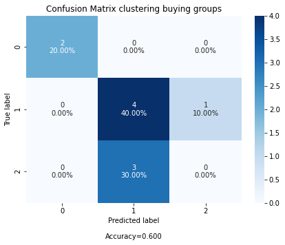
Multiclass example 2.¶
[18]:
# Creating a dictionary with the data
df = sns.load_dataset("iris")
[19]:
df.head()
[19]:
| sepal_length | sepal_width | petal_length | petal_width | species | |
|---|---|---|---|---|---|
| 0 | 5.1 | 3.5 | 1.4 | 0.2 | setosa |
| 1 | 4.9 | 3.0 | 1.4 | 0.2 | setosa |
| 2 | 4.7 | 3.2 | 1.3 | 0.2 | setosa |
| 3 | 4.6 | 3.1 | 1.5 | 0.2 | setosa |
| 4 | 5.0 | 3.6 | 1.4 | 0.2 | setosa |
[20]:
d_matrix = gower.gower_matrix(df.drop("species", axis=1))
[21]:
customer_names = [f"c_{x}" for x in range(d_matrix.shape[0])]
[22]:
_ = plt.figure(figsize=(7,5))
ax = sns.heatmap(data=pd.DataFrame(d_matrix),
annot=False,
fmt='.2g')
ax.xaxis.tick_top()
ax.xaxis.set_label_position('top')
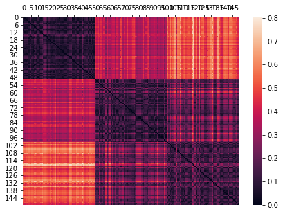
[23]:
# Configuring the parameters of the clustering algorithm
dbscan_cluster = DBSCAN(eps=0.3,
min_samples=10,
metric="precomputed")
[24]:
# Fitting the clustering algorithm
dbscan_cluster.fit(d_matrix)
[24]:
DBSCAN(eps=0.3, metric='precomputed', min_samples=10)
[25]:
# Adding the results to a new column in the dataframe
df["DBSCAN_cluster"] = dbscan_cluster.labels_
[26]:
l_matrix = linkage(d_matrix)
<ipython-input-26-df338ac2b59e>:1: ClusterWarning: scipy.cluster: The symmetric non-negative hollow observation matrix looks suspiciously like an uncondensed distance matrix
l_matrix = linkage(d_matrix)
[27]:
cld = fcluster(l_matrix, 3, criterion='maxclust')
df["linkage_cluster"] = cld
[28]:
_ = plt.figure(figsize=(20, 4))
dn = dendrogram(l_matrix)
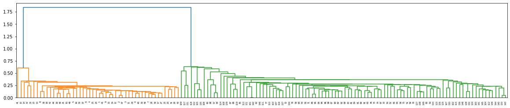
[29]:
df.head()
[29]:
| sepal_length | sepal_width | petal_length | petal_width | species | DBSCAN_cluster | linkage_cluster | |
|---|---|---|---|---|---|---|---|
| 0 | 5.1 | 3.5 | 1.4 | 0.2 | setosa | 0 | 1 |
| 1 | 4.9 | 3.0 | 1.4 | 0.2 | setosa | 0 | 1 |
| 2 | 4.7 | 3.2 | 1.3 | 0.2 | setosa | 0 | 1 |
| 3 | 4.6 | 3.1 | 1.5 | 0.2 | setosa | 0 | 1 |
| 4 | 5.0 | 3.6 | 1.4 | 0.2 | setosa | 0 | 1 |
[30]:
df["linkage_cluster"].unique()
[30]:
array([1, 3, 2], dtype=int32)
[31]:
ordered_cat = CategoricalDtype(['setosa', 'virginica', 'versicolor',], ordered=True)
[32]:
y_test = df["species"].astype(ordered_cat).cat.codes + 1
y_pred = df["linkage_cluster"]
[33]:
y_test.unique()
[33]:
array([1, 3, 2], dtype=int8)
[34]:
y_pred.unique()
[34]:
array([1, 3, 2], dtype=int32)
[35]:
cf_matrix = confusion_matrix(y_test, y_pred)
fig, ax = plot_confusion_matrix(cf=cf_matrix, title="Confusion Matrix clustering flower types")
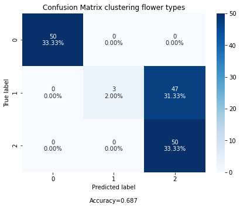
[36]:
df["linkage_cluster"] = df["linkage_cluster"].astype(str)
[37]:
fig, ax = tSNE(data=df, n_components=2, hue='species', tag='linkage_cluster', figsize=(15, 5))
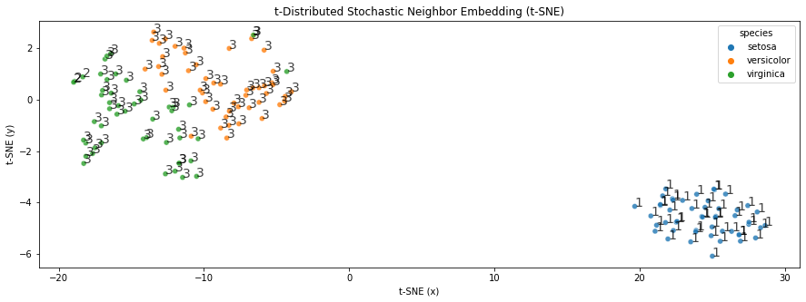
[38]:
fig, ax = tSNE(data=df, n_components=2, hue='species', figsize=(7, 5))
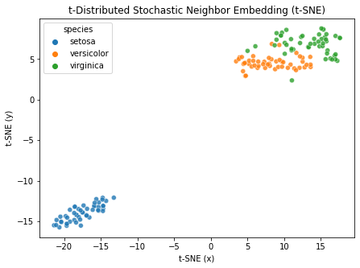
[39]:
fig, ax = tSNE(data=df
.assign(species_int = lambda d: d["species"].astype("category").cat.codes)
.drop("species", axis=1),
n_components=3, hue='species_int')
/Users/jamestwose/Coding/Data-Science/Machine_learning/extras.py:302: MatplotlibDeprecationWarning: Adding an axes using the same arguments as a previous axes currently reuses the earlier instance. In a future version, a new instance will always be created and returned. Meanwhile, this warning can be suppressed, and the future behavior ensured, by passing a unique label to each axes instance.
ax = fig.add_subplot(111, projection="3d")
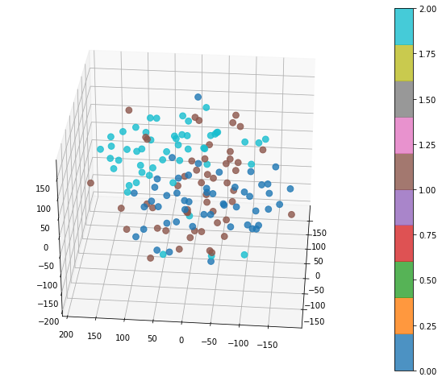
Binary example¶
[40]:
X, y = make_classification(n_samples=100,
n_features=5,
n_informative=5,
n_redundant=0,
n_repeated=0,
n_classes=2,
n_clusters_per_class=2,
shuffle=True,
random_state=42)
[41]:
df = (pd.DataFrame(X, columns=[f"feat_{x}" for x in range(0, X.shape[1])]).round(0).astype(str)
.merge(pd.DataFrame(y, columns=["target"]),
left_index=True,
right_index=True))
[42]:
df.head()
[42]:
| feat_0 | feat_1 | feat_2 | feat_3 | feat_4 | target | |
|---|---|---|---|---|---|---|
| 0 | -2.0 | 1.0 | 1.0 | 1.0 | 1.0 | 0 |
| 1 | -1.0 | -1.0 | -1.0 | 1.0 | 2.0 | 1 |
| 2 | -3.0 | 2.0 | 2.0 | -1.0 | 1.0 | 0 |
| 3 | -2.0 | 2.0 | -3.0 | -0.0 | -1.0 | 1 |
| 4 | -2.0 | 1.0 | 2.0 | -1.0 | 1.0 | 0 |
[43]:
d_matrix = gower.gower_matrix(df.drop("target", axis=1))
[44]:
_ = plt.figure(figsize=(7,4))
ax = sns.heatmap(data=pd.DataFrame(d_matrix),
annot=False,
fmt='.2g')
ax.xaxis.tick_top()
ax.xaxis.set_label_position('top')
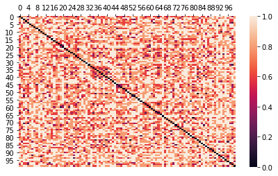
[45]:
# Configuring the parameters of the clustering algorithm
dbscan_cluster = DBSCAN(eps=0.3,
min_samples=2,
metric="precomputed")
[46]:
# Fitting the clustering algorithm
dbscan_cluster.fit(d_matrix)
[46]:
DBSCAN(eps=0.3, metric='precomputed', min_samples=2)
[47]:
# Adding the results to a new column in the dataframe
df["DBSCAN_cluster"] = dbscan_cluster.labels_
[48]:
l_matrix = linkage(d_matrix)
<ipython-input-48-df338ac2b59e>:1: ClusterWarning: scipy.cluster: The symmetric non-negative hollow observation matrix looks suspiciously like an uncondensed distance matrix
l_matrix = linkage(d_matrix)
[49]:
cld = fcluster(l_matrix, 3, criterion='maxclust')
df["linkage_cluster"] = cld
[50]:
# _ = plt.figure(figsize=(20, 4))
# dn = dendrogram(l_matrix)
[51]:
df.head()
[51]:
| feat_0 | feat_1 | feat_2 | feat_3 | feat_4 | target | DBSCAN_cluster | linkage_cluster | |
|---|---|---|---|---|---|---|---|---|
| 0 | -2.0 | 1.0 | 1.0 | 1.0 | 1.0 | 0 | 0 | 1 |
| 1 | -1.0 | -1.0 | -1.0 | 1.0 | 2.0 | 1 | -1 | 1 |
| 2 | -3.0 | 2.0 | 2.0 | -1.0 | 1.0 | 0 | 1 | 1 |
| 3 | -2.0 | 2.0 | -3.0 | -0.0 | -1.0 | 1 | -1 | 1 |
| 4 | -2.0 | 1.0 | 2.0 | -1.0 | 1.0 | 0 | 1 | 1 |
[52]:
y_test = df["target"]
y_pred = df["DBSCAN_cluster"] * -1
[53]:
# Compute False postive rate, and True positive rate
fpr, tpr, thresholds = roc_curve(y_test, y_pred)
# Calculate Area under the curve to display on the plot
auc_score = roc_auc_score(y_test, y_pred, average="macro")
# Now, plot the computed values
_ = plt.plot(fpr,
tpr,
label="ROC curve (area = %0.2f)" % auc_score,)
# Custom settings for the plot
_ = plt.plot([0, 1], [0, 1], c="grey", ls="--")
_ = plt.xlim([0.0, 1.0])
_ = plt.ylim([0.0, 1.05])
_ = plt.xlabel("1-Specificity (False Positive Rate)")
_ = plt.ylabel("Sensitivity (True Positive Rate)")
_ = plt.title("Receiver Operating Characteristics")
_ = plt.legend(loc="lower right")
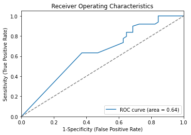